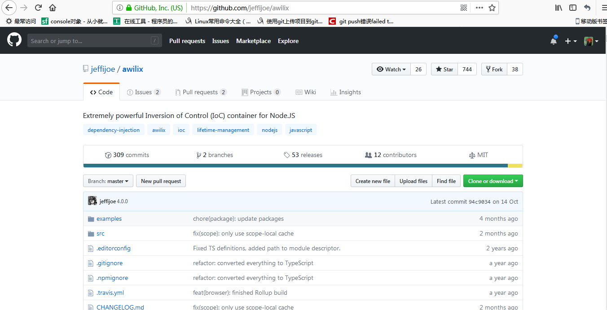
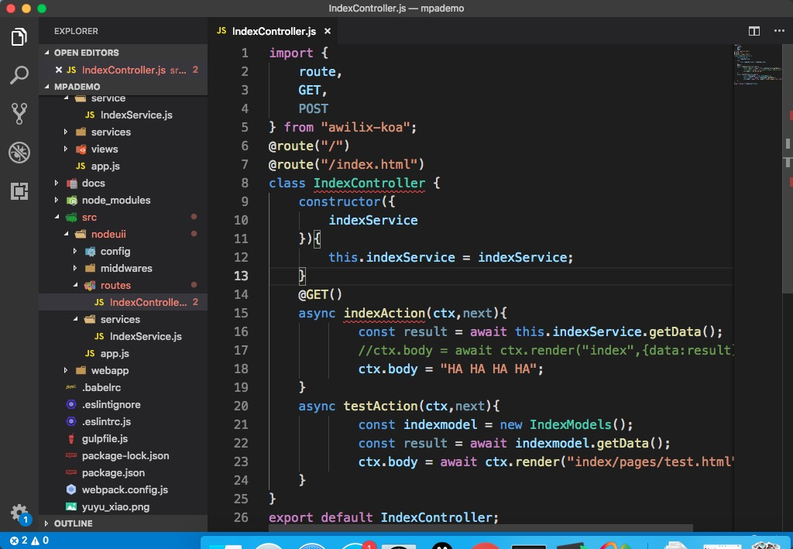
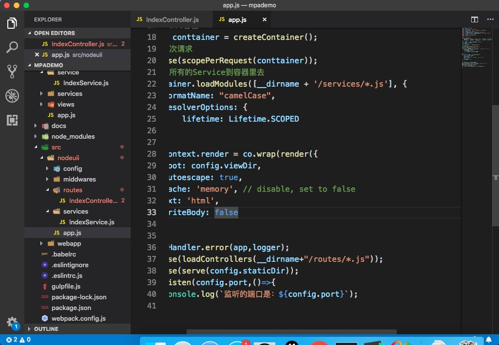
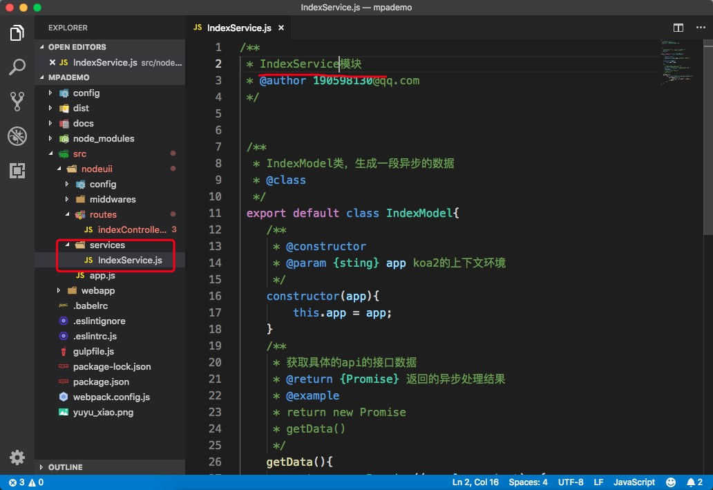
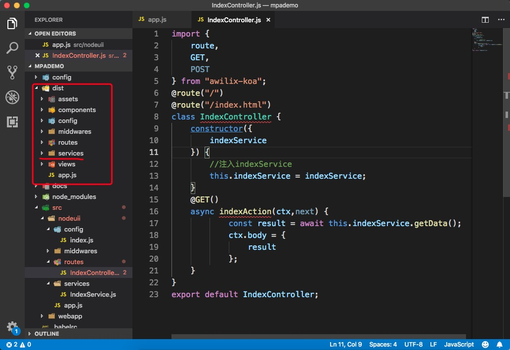
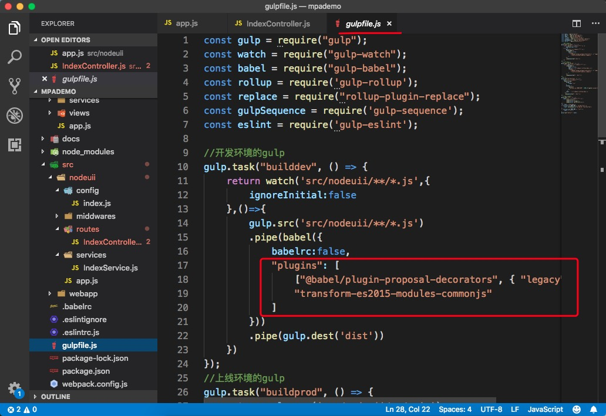
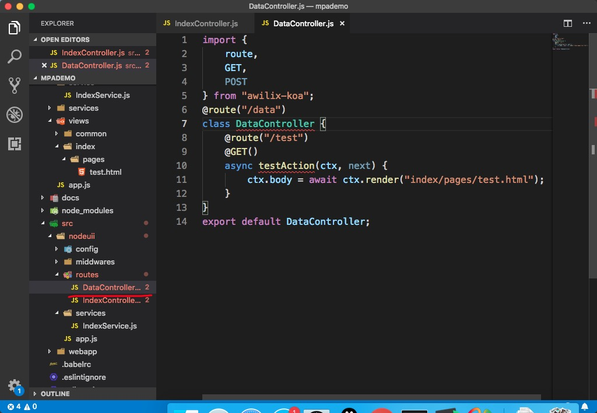
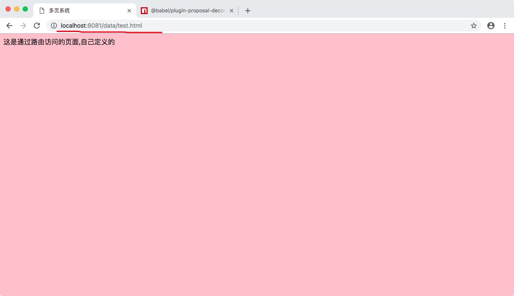

安装awilix和它的依赖包awilix-koa,github上找。（很屌的库，国内找不到）
npm install awilix --save
npm install awilix-koa --save
 2. 删除掉nodeuii/app.js里面引入路由的部分，因为是手动引入，太麻烦，我们要自动引入。
//app.js里面要删除的项有，
import routesInit from "./routes/routesInit.js"
import router from 'koa-simple-router'
routesInit.init(app,router);
删除routes/routesInit.js
在app.js中引入awilix
import {createContainer,LifeTime} from "awilix";
import {loadControllers,scopePerRequest} from "awilix-koa";
创建IOC容器
//创建IOC容器
const conttainer = createContainer();
//每一次请求
app.use(scopePerRequest(conttainer));
//装载所有的Service到容器里去
conttainer.loadModules([__dirname + '/services/*.js'], {
formatName: "camelCase",//驼峰合名法
resolverOptions: {
lifetime: Lifetime.SCOPED
}
});
修改routes/indexController.js
import {
route,
GET,
POST
} from "awilix-koa";
@route("/")
@route("/index.html")
class IndexController {
constructor({
indexService
}){
this.indexService = indexService;
}
@GET()
async indexAction(ctx,next){
const result = await this.indexService.getData();
//ctx.body = await ctx.render("index",{data:result});
ctx.body = "HA HA HA HA";
}
async testAction(ctx,next){
const indexmodel = new IndexModels();
const result = await indexmodel.getData();
ctx.body = await ctx.render("index/pages/test.html");
}
}
export default IndexController;
 6. 自动化装载路由,app.js里面添加
//app.js
app.use(loadControllers(__dirname+"/routes/*.js"));
 7. 将models目录重命名为services,将IndexModels.js改名为IndexService.js，里面的内容不用变
 8. 修改/routes/indexController.js,将文件重命名为IndexController.js
//IndexController.js
import {
route,
GET,
POST
} from "awilix-koa";
@route("/")
@route("/index.html")
class IndexController {
constructor({
indexService
}) {
//注入indexService
this.indexService = indexService;
}
@GET()
async indexAction(ctx,next) {
const result = await this.indexService.getData();
ctx.body = {
result
};
}
}
export default IndexController;

由于node还不支持@GET()这种写法，所以需要在gulp中配置一下。首先安装babel-plugin-transform-decorators ,(注意babel7)
npm install --save-dev @babel/plugin-proposal-decorators
//gulpfile.js
"plugins": [
["@babel/plugin-proposal-decorators", { "legacy": true }],
"transform-es2015-modules-commonjs"
]

在routes目录下创建DataController.js
//DataController.js
import {
route,
GET,
POST
} from "awilix-koa";
@route("/data")
class DataController {
@route("/test")
@GET()
async testAction(ctx, next) {
ctx.body = await ctx.render("index/pages/test.html");
}
}
export default DataController;
 
水果店买水果：老板给你打电话，如果有了苹果就给你，不需要自己天天去店里看了。 控制反转的手段叫：DI，老板好比IOC，整个过程叫作AOP（面向切面）编程。